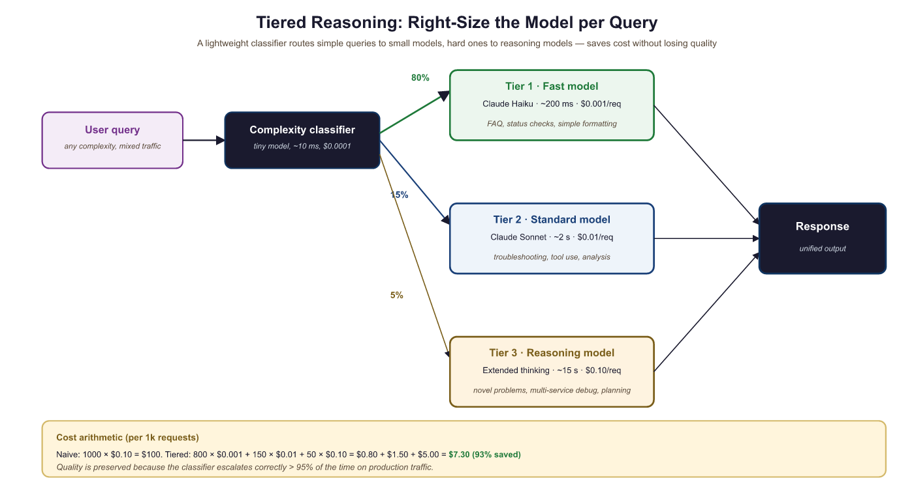

"Thinking longer before acting is not laziness. It is the most expensive kind of intelligence."
Agent X, Deeply Reasoned AI Agent
Reasoning models collapse multi-step agent scaffolding into a single model call. Where a standard agent needs explicit ReAct loops, planning code, and reflection prompts, a reasoning model (OpenAI o1/o3, Claude with extended thinking, DeepSeek-R1) can internalize decomposition, strategy selection, and self-correction within one generation. This section explores how reasoning models change agent architecture, when to use them versus standard models, and the hybrid approach that pairs a reasoning model for planning with a faster model for routine execution. The test-time compute concepts from Chapter 08 explain the underlying mechanism.
Prerequisites
This section builds on agent foundations from Section 20.1, tool use from Section 20.7, and reasoning model concepts from Chapter 08.
20.3.1 The Reasoning Model Revolution
Traditional LLMs generate tokens in a single forward pass, committing to an approach with the first few tokens and unable to backtrack. Reasoning models (OpenAI o1/o3, Anthropic Claude with extended thinking, DeepSeek-R1) change this fundamentally by allocating additional compute at inference time. These models produce an internal chain of reasoning before generating their final answer, exploring the problem space, considering alternatives, and checking intermediate results.
For agent design, reasoning models shift complexity from the scaffolding to the model itself. A standard agent needs explicit ReAct loops, multi-step planning code, and reflection prompts. A reasoning model can internalize much of this within a single generation. The agent loop becomes simpler: provide context and tools, let the model think, execute the resulting action. The model handles decomposition, strategy selection, and self-correction internally rather than requiring the orchestrator to manage these processes.
The three major reasoning model families each take a different approach. OpenAI's o1/o3 models use reinforcement learning to train an internal chain of thought (Section 8.1) that is hidden from the user. Anthropic's Claude with extended thinking exposes the reasoning process in a dedicated thinking block, giving developers visibility into the model's deliberation. DeepSeek-R1 was trained using large-scale RL and demonstrates that reasoning capabilities can emerge from open-source training pipelines.
Reasoning models excel at planning and strategy selection but are overkill for routine tool execution. The optimal agent architecture uses a reasoning model for the planning phase (decomposing the task, selecting tools, determining execution order) and a faster, cheaper standard model for routine execution steps (making API calls, formatting outputs, simple lookups). This hybrid approach captures the benefits of deep reasoning where it matters while keeping costs and latency manageable for the overall pipeline.
Extended Thinking in Practice
This snippet enables extended thinking in the Anthropic API so the model can reason through a complex planning task before responding.
import anthropic
client = anthropic.Anthropic()
# Use extended thinking for complex planning
response = client.messages.create(
model="claude-sonnet-4-20250514",
max_tokens=16000,
thinking={
"type": "enabled",
"budget_tokens": 10000, # Allow up to 10K tokens for reasoning
},
messages=[{
"role": "user",
"content": (
"I need to migrate our authentication system from session-based "
"to JWT tokens. The system serves 50K daily active users across "
"3 microservices. Create a detailed migration plan that minimizes "
"downtime and handles the transition period where both auth "
"methods must work simultaneously."
),
}],
)
# The response includes both thinking and final output
for block in response.content:
if block.type == "thinking":
print(f"Reasoning ({len(block.thinking)} chars):")
print(block.thinking[:500] + "...")
elif block.type == "text":
print(f"\nFinal plan:\n{block.text}")
20.3.2 Thinking Budgets and Cost Management
Reasoning models consume significantly more tokens than standard models because of their internal deliberation. A query that costs 500 output tokens with GPT-4o might cost 5,000+ tokens with o3 due to the hidden reasoning chain. For agent systems that make many LLM calls per task, this cost multiplier can make reasoning models prohibitively expensive if used indiscriminately.
The solution is thinking budgets: allocating reasoning compute strategically based on task difficulty. Simple tasks (looking up a fact, formatting output, making a routine API call) get zero or minimal thinking budget. Complex tasks (planning a multi-step migration, debugging a subtle race condition, synthesizing information across many sources) get generous thinking budgets. The agent or orchestrator classifies each step's difficulty and adjusts the reasoning allocation accordingly.
Anthropic's extended thinking API makes this explicit with the budget_tokens parameter. OpenAI's o-series models offer reasoning effort levels (low, medium, high). In practice, teams often implement a difficulty classifier that routes queries: simple queries go to a fast model (GPT-4o-mini, Claude Haiku), medium queries use standard models, and only genuinely complex reasoning tasks invoke the full reasoning model with a generous budget.
Who: A DevOps team at a cloud hosting company handling 2,000 technical support tickets per day.
Situation: The team deployed an AI support agent using Claude 3.5 Sonnet for all queries, achieving 89% resolution accuracy. However, the per-query cost of $0.08 and average latency of 4 seconds felt excessive when most tickets were simple FAQ lookups or password resets.
Problem: Sending every query to the same model wasted reasoning compute on trivial tasks while providing no extra quality benefit. Monthly API costs reached $4,800, and customers waiting for simple answers experienced unnecessary delays.
Decision: The team implemented a three-tier routing system: Tier 1 (Claude Haiku, ~200ms, $0.001) for FAQ lookups and account status checks; Tier 2 (Sonnet, ~2s, $0.01) for configuration troubleshooting; Tier 3 (Claude with extended thinking, ~15s, $0.10) for novel infrastructure issues and multi-service debugging. A lightweight classifier routed each query to the appropriate tier.
Result: 80% of queries resolved at Tier 1, 15% at Tier 2, and 5% at Tier 3. Average cost per query dropped 60% (from $0.08 to $0.03) with no loss in resolution quality. Monthly spend fell to $1,800.
Lesson: Matching reasoning compute to task difficulty is the single highest-ROI optimization for production agent systems.
20.3.3 Architectural Patterns for Reasoning Agents
When building agents around reasoning models, several architectural patterns emerge. The Think-then-Act pattern uses a single reasoning call to produce both a plan and the first action, reducing round trips. The Reasoning Planner + Fast Executor pattern separates planning (reasoning model) from execution (fast model), optimizing cost and latency. The Adaptive Depth pattern starts with shallow reasoning and escalates to deeper reasoning only when initial attempts fail.
A critical consideration is that reasoning models interact differently with tool use. Standard models interleave tool calls naturally within a ReAct loop. Reasoning models tend to produce better results when given all available information upfront and asked to reason about which tools to use, rather than discovering tool capabilities incrementally. This means the system prompt for a reasoning-based agent should include comprehensive tool documentation and examples rather than relying on the model to explore tools through trial and error.
Do not over-prompt reasoning models. Unlike standard models that benefit from detailed chain-of-thought instructions, reasoning models already think step by step internally. Adding explicit "think step by step" or "break this into substeps" instructions can actually degrade performance by conflicting with the model's internal reasoning process. Give reasoning models the problem, the context, and the tools. Let them figure out the approach.
Lab: Build a ReAct Agent
Objective
Implement a ReAct (Reasoning + Acting) agent loop from scratch. The agent will receive a user question, reason about which tool to call, execute the tool, observe the result, and repeat until it can provide a final answer. You will build the loop, the tool registry, and the prompt template yourself rather than relying on a framework, so you understand exactly how agent orchestration works.
What You'll Practice
- Designing a ReAct prompt template with Thought / Action / Observation structure
- Implementing a tool registry with callable Python functions
- Parsing structured LLM output to extract tool names and arguments
- Building the agent loop with a maximum step limit to prevent runaway execution
- Handling tool errors gracefully within the agent loop
Setup
You need Python 3.10+ and an API key for either OpenAI or Anthropic. Install the client library of your choice. The lab uses the OpenAI client by default, but the Anthropic alternative is shown in the solution.
pip install openai
# or: pip install anthropic
export OPENAI_API_KEY="your-key-here"Guided Steps
Step 1: Define the tools the agent can use. We create three simple tools: a calculator, a weather lookup (simulated), and a web search (simulated).
import json
import re
from openai import OpenAI
client = OpenAI()
# Tool registry: name -> (function, description)
def calculator(expression: str) -> str:
"""Evaluate a mathematical expression safely."""
try:
# Only allow safe math operations
allowed = set("0123456789+-*/.() ")
if not all(c in allowed for c in expression):
return f"Error: unsafe expression '{expression}'"
result = eval(expression)
return str(result)
except Exception as e:
return f"Error: {e}"
def weather(city: str) -> str:
"""Look up current weather for a city (simulated)."""
data = {
"new york": "72F, partly cloudy",
"london": "58F, rainy",
"tokyo": "68F, clear",
"paris": "63F, overcast",
}
return data.get(city.lower(), f"No weather data available for '{city}'")
def search(query: str) -> str:
"""Search the web for information (simulated)."""
results = {
"population of france": "Approximately 68.4 million (2025 estimate)",
"tallest building in the world": "Burj Khalifa in Dubai, 828 meters",
"speed of light": "299,792,458 meters per second",
}
for key, value in results.items():
if key in query.lower():
return value
return f"Search results for '{query}': No relevant results found."
TOOLS = {
"calculator": (calculator, "Evaluate a math expression. Input: a math expression string."),
"weather": (weather, "Get current weather for a city. Input: city name."),
"search": (search, "Search the web for factual information. Input: search query."),
}
Step 2: Build the ReAct prompt template.
def build_system_prompt():
tool_descriptions = "\n".join(
f" - {name}: {desc}" for name, (_, desc) in TOOLS.items()
)
return f"""You are a helpful assistant that answers questions by reasoning step-by-step and using tools when needed.
Available tools:
{tool_descriptions}
For each step, respond in EXACTLY this format:
Thought: [your reasoning about what to do next]
Action: [tool_name]
Action Input: [input to the tool]
When you have enough information to answer, respond with:
Thought: [your final reasoning]
Final Answer: [your complete answer to the user's question]
Important rules:
- Always start with a Thought before taking an Action.
- Use exactly one tool per step.
- If a tool returns an error, reason about it and try a different approach.
- Do not make up information. Use tools to find facts."""Step 3: Implement the output parser. Extract the tool name and input from the LLM response.
def parse_agent_output(text):
"""Parse the LLM output to extract action or final answer.
Returns:
("action", tool_name, tool_input) if the model wants to call a tool
("final", answer, None) if the model has a final answer
("error", message, None) if parsing fails
"""
# TODO: check if the response contains "Final Answer:"
# If so, extract and return everything after it
# Hint: use text.split("Final Answer:", 1)
if "Final Answer:" in text:
answer = ???
return ("final", answer, None)
# TODO: extract Action and Action Input using string matching or regex
# Hint: look for "Action:" and "Action Input:" lines
action_match = re.search(r"Action:\s*(.+)", text)
input_match = re.search(r"Action Input:\s*(.+)", text)
if action_match and input_match:
tool_name = action_match.group(1).strip()
tool_input = input_match.group(1).strip()
return ("action", tool_name, tool_input)
return ("error", "Could not parse response", None)Step 4: Build the agent loop.
def run_agent(question, max_steps=6, verbose=True):
"""Run the ReAct agent loop."""
messages = [
{"role": "system", "content": build_system_prompt()},
{"role": "user", "content": question},
]
for step in range(max_steps):
# Call the LLM
response = client.chat.completions.create(
model="gpt-4o-mini",
messages=messages,
temperature=0.0,
max_tokens=500,
)
assistant_text = response.choices[0].message.content
if verbose:
print(f"\n--- Step {step + 1} ---")
print(assistant_text)
# Parse the output
result_type, value, tool_input = parse_agent_output(assistant_text)
if result_type == "final":
if verbose:
print(f"\n=== FINAL ANSWER ===\n{value}")
return value
elif result_type == "action":
# TODO: look up the tool in TOOLS and execute it
# Handle the case where the tool name is not recognized
if value in TOOLS:
tool_fn, _ = TOOLS[value]
observation = tool_fn(tool_input)
else:
observation = f"Error: unknown tool '{value}'. Available tools: {list(TOOLS.keys())}"
if verbose:
print(f"Observation: {observation}")
# Append the assistant message and observation to the conversation
messages.append({"role": "assistant", "content": assistant_text})
messages.append({"role": "user", "content": f"Observation: {observation}"})
else:
# Parsing error: ask the model to try again
messages.append({"role": "assistant", "content": assistant_text})
messages.append({"role": "user", "content": "Please respond using the exact Thought/Action/Action Input format."})
return "Agent reached maximum steps without a final answer."The implementation above builds a ReAct agent loop from scratch for pedagogical clarity. In production, use smolagents (install: pip install smolagents), which provides a lightweight ReAct agent with built-in tool management:
# Production equivalent using smolagents
from smolagents import CodeAgent, DuckDuckGoSearchTool, HfApiModel
agent = CodeAgent(
tools=[DuckDuckGoSearchTool()],
model=HfApiModel(),
)
result = agent.run("What is the weather in Tokyo?")For more complex orchestration with state machines, branching, and persistence, use LangGraph (install: pip install langgraph), which provides a graph-based agent framework with built-in ReAct support.
Step 5: Test the agent on multi-step questions.
# Single-tool question
run_agent("What is the weather in Tokyo?")
# Multi-step question requiring two tools
run_agent("What is the population of France divided by 2?")
# Question requiring reasoning about which tool to use
run_agent("I'm packing for London. Should I bring an umbrella? Also, what is 72 - 58?")Expected Output
For the weather question, the agent should call the weather tool once and return the result. For the population question, the agent should first search for the population, then use the calculator to divide by 2. For the London question, the agent should check the weather, note that it is rainy (umbrella recommended), and use the calculator for the subtraction. Each step should show a clear Thought, Action, and Observation.
Stretch Goals
- Add a "memory" tool that lets the agent store and retrieve key-value pairs across turns, simulating persistent memory.
- Implement a token budget tracker that counts tokens used across all LLM calls and stops the agent if it exceeds a budget.
- Add error recovery: if a tool fails, the agent should try an alternative approach rather than giving up.
- Replace the simulated tools with real API calls (e.g., a real weather API, a real search API) and handle rate limits and timeouts.
Solution
Show 111 lines of code
import json
import re
from openai import OpenAI
client = OpenAI()
# --- Tools ---
def calculator(expression: str) -> str:
try:
allowed = set("0123456789+-*/.() ")
if not all(c in allowed for c in expression):
return f"Error: unsafe expression '{expression}'"
return str(eval(expression))
except Exception as e:
return f"Error: {e}"
def weather(city: str) -> str:
data = {
"new york": "72F, partly cloudy",
"london": "58F, rainy",
"tokyo": "68F, clear",
"paris": "63F, overcast",
}
return data.get(city.lower(), f"No weather data for '{city}'")
def search(query: str) -> str:
results = {
"population of france": "Approximately 68.4 million (2025 estimate)",
"tallest building in the world": "Burj Khalifa in Dubai, 828 meters",
"speed of light": "299,792,458 meters per second",
}
for key, value in results.items():
if key in query.lower():
return value
return f"No relevant results for '{query}'."
TOOLS = {
"calculator": (calculator, "Evaluate a math expression. Input: a math expression string."),
"weather": (weather, "Get current weather for a city. Input: city name."),
"search": (search, "Search the web for factual information. Input: search query."),
}
# --- System Prompt ---
def build_system_prompt():
tool_descriptions = "\n".join(
f" - {name}: {desc}" for name, (_, desc) in TOOLS.items()
)
return f"""You are a helpful assistant that answers questions by reasoning step-by-step and using tools when needed.
Available tools:
{tool_descriptions}
For each step, respond in EXACTLY this format:
Thought: [your reasoning about what to do next]
Action: [tool_name]
Action Input: [input to the tool]
When you have enough information to answer, respond with:
Thought: [your final reasoning]
Final Answer: [your complete answer to the user's question]
Important rules:
- Always start with a Thought before taking an Action.
- Use exactly one tool per step.
- If a tool returns an error, reason about it and try a different approach.
- Do not make up information. Use tools to find facts."""
# --- Parser ---
def parse_agent_output(text):
if "Final Answer:" in text:
answer = text.split("Final Answer:", 1)[1].strip()
return ("final", answer, None)
action_match = re.search(r"Action:\s*(.+)", text)
input_match = re.search(r"Action Input:\s*(.+)", text)
if action_match and input_match:
return ("action", action_match.group(1).strip(), input_match.group(1).strip())
return ("error", "Could not parse response", None)
# --- Agent Loop ---
def run_agent(question, max_steps=6, verbose=True):
messages = [
{"role": "system", "content": build_system_prompt()},
{"role": "user", "content": question},
]
for step in range(max_steps):
response = client.chat.completions.create(
model="gpt-4o-mini", messages=messages, temperature=0.0, max_tokens=500,
)
text = response.choices[0].message.content
if verbose:
print(f"\n--- Step {step + 1} ---")
print(text)
result_type, value, tool_input = parse_agent_output(text)
if result_type == "final":
if verbose:
print(f"\n=== FINAL ANSWER ===\n{value}")
return value
elif result_type == "action":
if value in TOOLS:
tool_fn, _ = TOOLS[value]
observation = tool_fn(tool_input)
else:
observation = f"Error: unknown tool '{value}'. Available: {list(TOOLS.keys())}"
if verbose:
print(f"Observation: {observation}")
messages.append({"role": "assistant", "content": text})
messages.append({"role": "user", "content": f"Observation: {observation}"})
else:
messages.append({"role": "assistant", "content": text})
messages.append({"role": "user", "content": "Please use the exact Thought/Action/Action Input format."})
return "Agent reached maximum steps without a final answer."
# --- Test ---
print("=" * 60)
print("Test 1: Single tool")
print("=" * 60)
run_agent("What is the weather in Tokyo?")
print("\n" + "=" * 60)
print("Test 2: Multi-step (search + calculate)")
print("=" * 60)
run_agent("What is the population of France divided by 2?")
print("\n" + "=" * 60)
print("Test 3: Multiple tools in sequence")
print("=" * 60)
run_agent("I'm packing for London. Should I bring an umbrella? Also, what is 72 - 58?")Exercises
Explain why reasoning models are described as 'overkill for routine tool execution.' What specific characteristics of reasoning models make them better suited for planning than for simple API calls?
Answer Sketch
Reasoning models allocate extra compute for internal chain-of-thought deliberation. For a simple API call (e.g., fetching a weather forecast), this extra compute adds latency and cost without improving accuracy. Planning tasks benefit because they require evaluating multiple strategies, considering dependencies, and anticipating failure modes, all of which leverage the model's extended reasoning capacity.
Using the Anthropic API with extended thinking, write code that sets a thinking budget of 5000 tokens for a planning task and 500 tokens for a simple lookup task. Print the actual tokens used in each case to demonstrate budget-aware reasoning.
Answer Sketch
Use anthropic.Anthropic().messages.create() with thinking={'type': 'enabled', 'budget_tokens': N}. For the planning task, send a complex multi-step problem. For the lookup, send a simple factual question. Print block.thinking length for each response to show the model adapts its reasoning depth to the budget.
Design a three-tier agent architecture that routes queries to different model tiers based on complexity. Define the routing criteria, the model used at each tier, and the expected cost and latency profile.
Answer Sketch
Tier 1 (fast model, no reasoning): FAQ lookups, status checks. ~200ms, $0.001/query. Tier 2 (standard model): troubleshooting with known patterns. ~2s, $0.01/query. Tier 3 (reasoning model): novel multi-step problems. ~15s, $0.10/query. Route based on a lightweight classifier that scores query complexity on factors like number of entities, required reasoning steps, and domain specificity.
Why does adding 'think step by step' to a reasoning model prompt sometimes degrade performance? How does this differ from prompting a standard model?
Answer Sketch
Reasoning models already perform internal chain-of-thought deliberation. Adding explicit step-by-step instructions can conflict with the model's trained reasoning process, causing it to produce a surface-level enumeration rather than its deeper internal reasoning. Standard models lack this built-in reasoning and benefit from explicit step-by-step prompting because it structures their single-pass generation.
Compare the three major reasoning model families (OpenAI o1/o3, Anthropic Claude with extended thinking, DeepSeek-R1) along these dimensions: visibility of reasoning, cost model, and suitability for agent backbones.
Answer Sketch
OpenAI o1/o3: hidden reasoning (opaque), charged per reasoning token, good for tasks where you trust the model's process. Claude extended thinking: visible reasoning in a thinking block, budget-controllable, excellent for debugging agent behavior. DeepSeek-R1: open-source, reasoning visible, no API cost for self-hosted, best for teams that need full control. For agent backbones, visible reasoning (Claude, DeepSeek) is preferable because it enables monitoring and debugging.
The model selects tools based on their descriptions. Vague descriptions like "processes data" cause misuse. Write descriptions as if explaining to a new team member: what the tool does, what inputs it needs, and when to use it versus alternatives.
- Reasoning models perform extended internal chain-of-thought, producing more reliable multi-step reasoning at higher latency and cost.
- The choice between reasoning and standard models depends on task complexity, latency requirements, and available tool verification.
- Extended thinking traces can be used for debugging and interpretability, revealing the agent's decision-making process.
Show Answer
Reasoning models perform extended internal chain-of-thought before responding, exploring multiple solution paths and self-correcting. This produces more reliable multi-step reasoning at the cost of higher latency and token usage compared to standard chat models.
Show Answer
Standard models are preferred when latency is critical (real-time interactions), when tasks are simple enough that extended reasoning adds cost without benefit, or when the agent's tool use pattern already provides external verification (making internal reasoning redundant).
What Comes Next
In the next section, Agent Evaluation and Benchmarks, we cover how to measure agent performance using benchmarks like SWE-bench, WebArena, and GAIA that test real-world multi-step capabilities.
Reasoning Models
Describes training reasoning models through reinforcement learning, showing how extended chain-of-thought emerges from RL rewards on reasoning tasks.
OpenAI (2024). "Learning to Reason with LLMs." OpenAI Blog.
Introduces the o1 model family and the concept of test-time compute scaling through extended reasoning, establishing the paradigm of reasoning models as agent backbones.
Analyzes the trade-off between model parameters and test-time compute, showing when additional thinking time is more cost-effective than using a larger model.
Reasoning Agents and Cost Management
Chen, J., Lin, K., Chen, J., et al. (2024). "More Agents Is All You Need." arXiv preprint.
Demonstrates that sampling multiple agent trajectories and using majority voting can improve performance, providing a simple scaling strategy for reasoning agents.
Comprehensive survey covering agent architectures and the role of reasoning capabilities in autonomous agent systems, including planning, reflection, and tool use.
Anthropic (2025). "The Prompt Report: A Systematic Survey of Prompting Techniques." arXiv preprint.
Surveys prompting techniques including those specific to reasoning models, covering thinking budget control and structured reasoning approaches relevant to agent backbone selection.